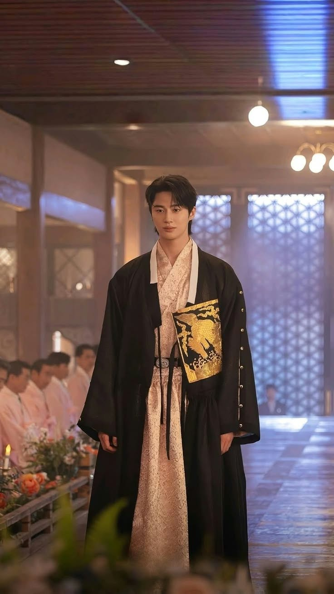
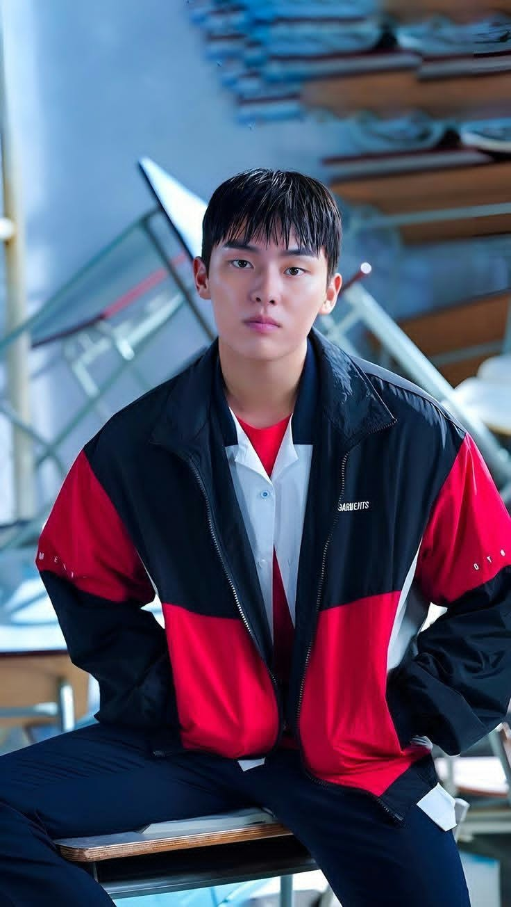
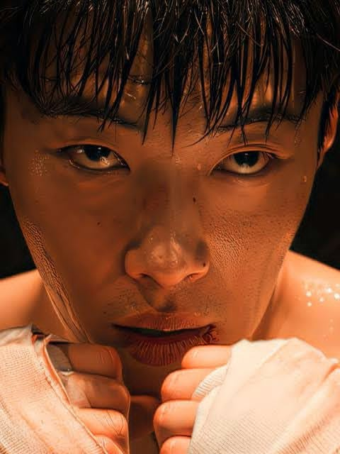
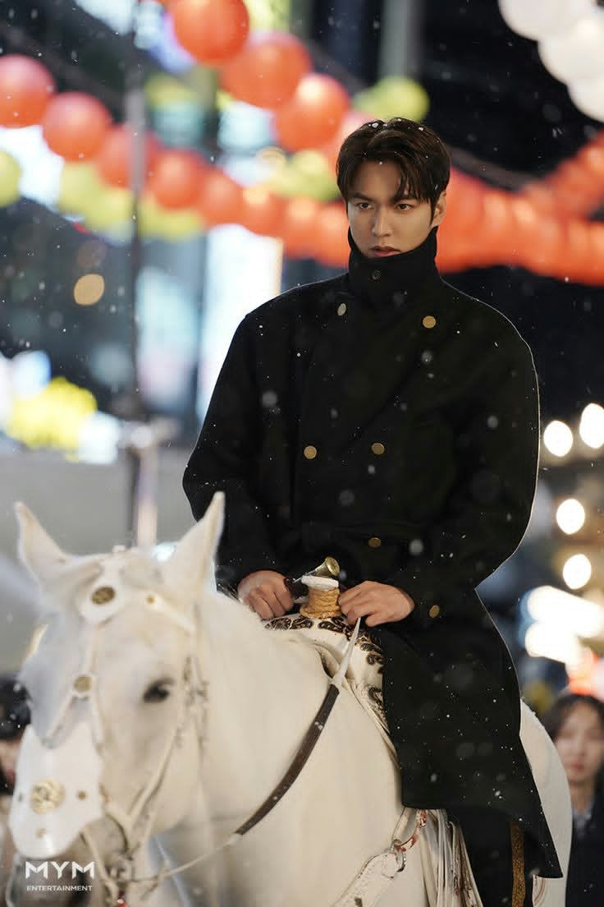

01
SPORT
Cristiano Ronaldo
Cầu thủ bóng đá · Bồ Đào Nha
Sinh: 05.02.1985CR7 · Al-Nassr
A LITTLE COLLECTION FOR YOU
Một góc nhỏ để lưu lại những gương mặt, những khoảnh khắc và những người khiến mình luôn muốn nhìn lại.
♫ Background music: BTS — 2.0
01 — THE COLLECTION
Không chỉ là những bức ảnh. Đây là một album nhỏ của những người mình yêu thích — từ âm nhạc, phim ảnh đến bóng đá.
EXPLORE THE COLLECTION ↓A COLLECTION OF FAVORITES
Mỗi người một màu sắc, một câu chuyện và một dấu ấn riêng. Cuộn xuống để xem từng profile.
03 — FAVORITE PEOPLE
Cầu thủ bóng đá · Bồ Đào Nha

02Diễn viên · Người mẫu · Hàn Quốc

03
Diễn viên · Hàn Quốc
Diễn viên · Trung Quốc
Diễn viên · MC · Hàn Quốc

06Diễn viên · Ca sĩ · Hàn Quốc
Diễn viên · Hàn Quốc
Ca sĩ · BTS · Hàn Quốc
Ca sĩ · Diễn viên · Hàn Quốc
04 — A LITTLE NOTE
Có những người mình chưa từng gặp, nhưng lại vô tình trở thành một phần rất nhỏ trong những ngày tháng của mình. Một bài hát, một bộ phim, một trận đấu — đôi khi chỉ vậy thôi cũng đủ để một khoảnh khắc được nhớ thật lâu.